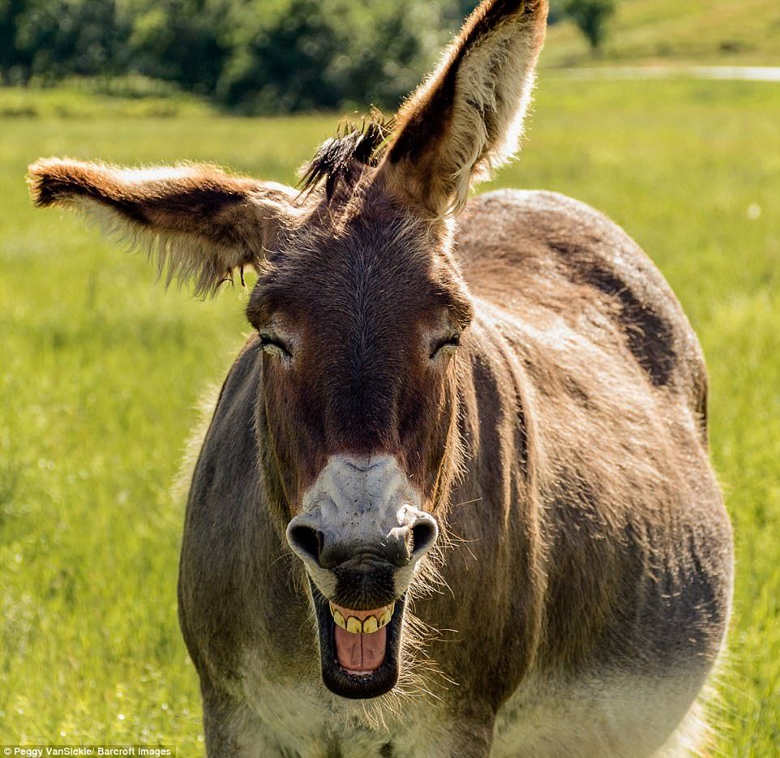
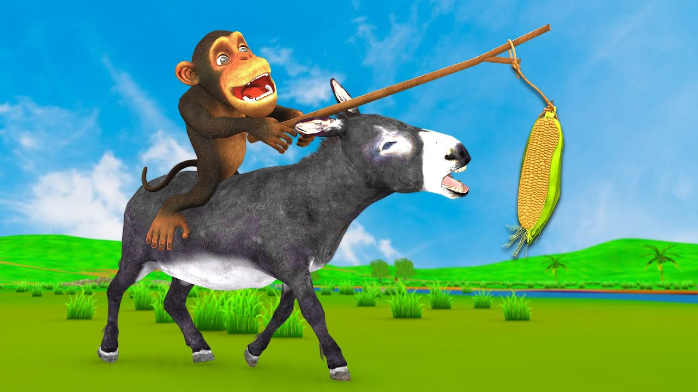
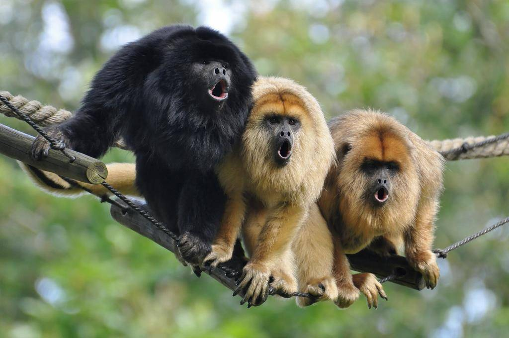
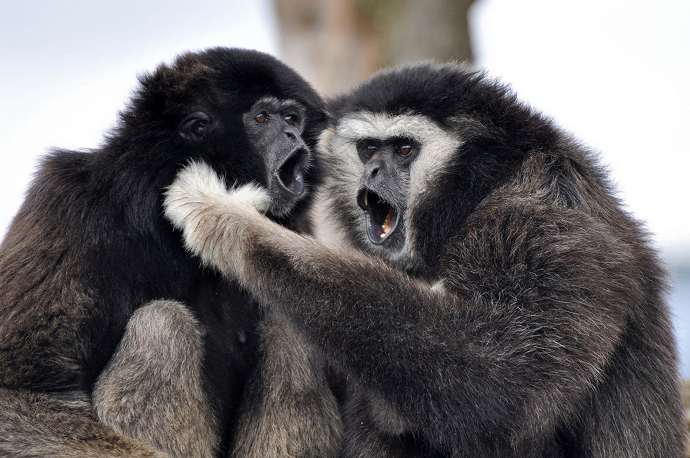

First impression.
Long years ego, around 10, in mountains lived donkey.
His name was Goroh.
He liked to walk around his mount and wave to pigeons by his loooong mane.
Pigeons usualy didn't pay attention, and little donkey did it again and again every day.

A wonderful meeting.
Once donke go walking and didn't see any pigeons, he ran all over his mount, but still couldn't find anyone.
Then donkey lie on the cold stone and wildly whinnied,
and then he heard loud scream.
Goroh ran to the sound, and some time later he had seen young and strong monkey, and monkey had seen donkey.
In a second they both understood, it was fate.
They get to know each other, monkeys name was Ashoot.

Horriblr horde.
Monkey and donkey lived together a couple of years, they liked to play on the mount, Goroh taught monkey to be gentle, and monkey gave his strenth to donkey.
Sadly this heavenly live couldn't last forever, and one day Goroh heard sounds of fight.
Ashoot climb up a tree and had seen 40 great black gibbons,
he was in so gret fear that he just left his friend and leave the mount.
Donkey had no such paws like his friend, and could not run away.
Gibbons cought him, and make slave.

Miraculous rescue.
So several years have passed, Donkey startet to lose hope.
He worked every day from dawn to dusk, and had no strenth to think of something else.
But in one dark night, Goroh heard quied sounds, he rised his head and had seen...
It was Ashoot, he came for donkey, he made deep hole in the ground to save his friend, and came.
Goroh was sohappy that coul not say anything, bat he was also to weak to crawl through hole.
Ashoot rise him, lie on shoulder, and ran throu the door, gibbon noticed that slave trying to escape, and start to throw stones at them.
Friends were able to dodge them by miracle, but in the end they leave this horrible place and start new life together.